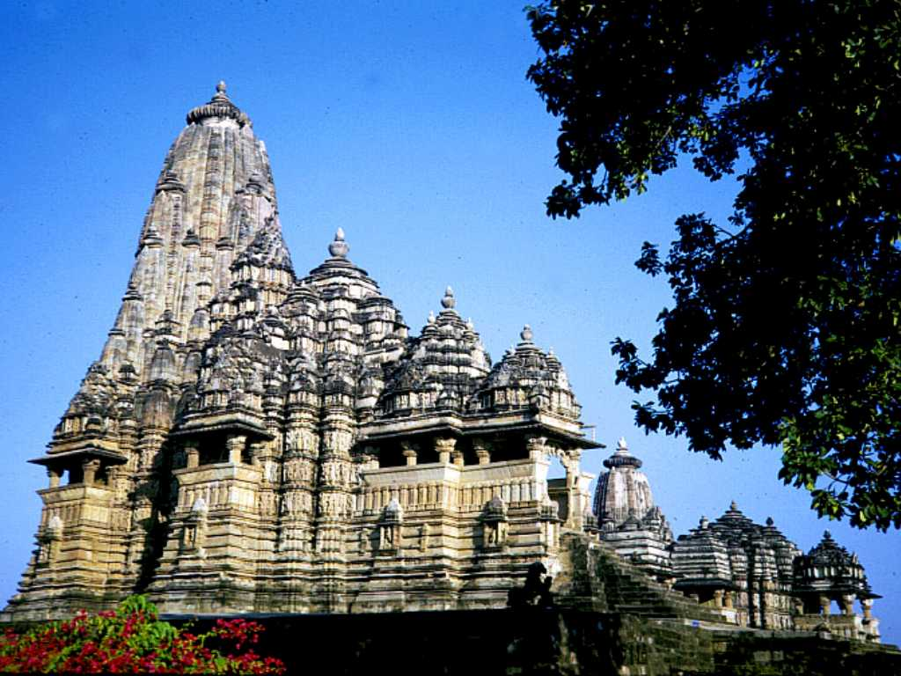
August 1985 Mahadev Temple Western Group of Temples Khajuraho
中部インド一帯を支配していたチャンデーラ王家が１０～１２世紀に造らせたものでカジュラホ寺院群は２２の寺院がある 大きなものは高さ４０mもあり神が宿るとされるヒマラヤ山脈を表し寺は神様の家として創られた
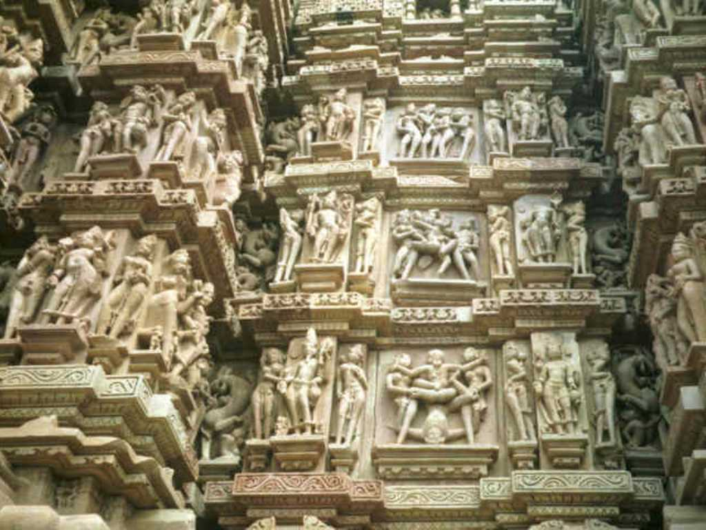
Relief Mahadev Temple
ヒンズー教は紀元前３０００年頃インドで生まれた世界最古の宗教と言われシヴァ神と天女アプサラの彫刻に包まれた美しい寺院が残っている ヒンズー教の真理 アルタ実利 ダルマ道徳 カーマ性愛
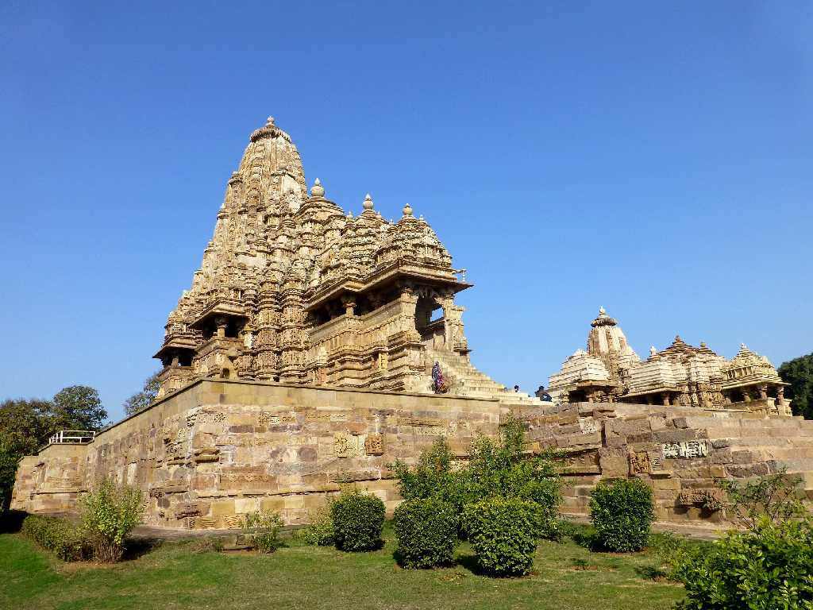
Mahadev Temple Western Group of Temples Khajuraho
約３０年ぶりの再訪問
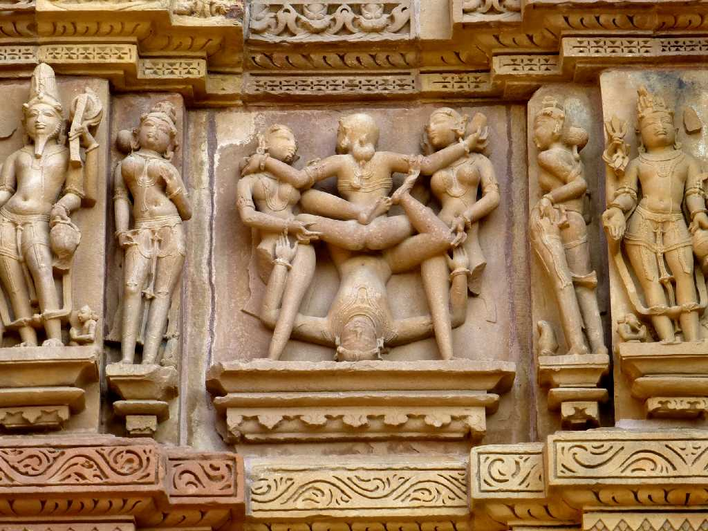
Relief Mahadev Temple
１０２５年～１０５０年頃創られた破壊の神シヴァ神を祀るマハデワ寺院
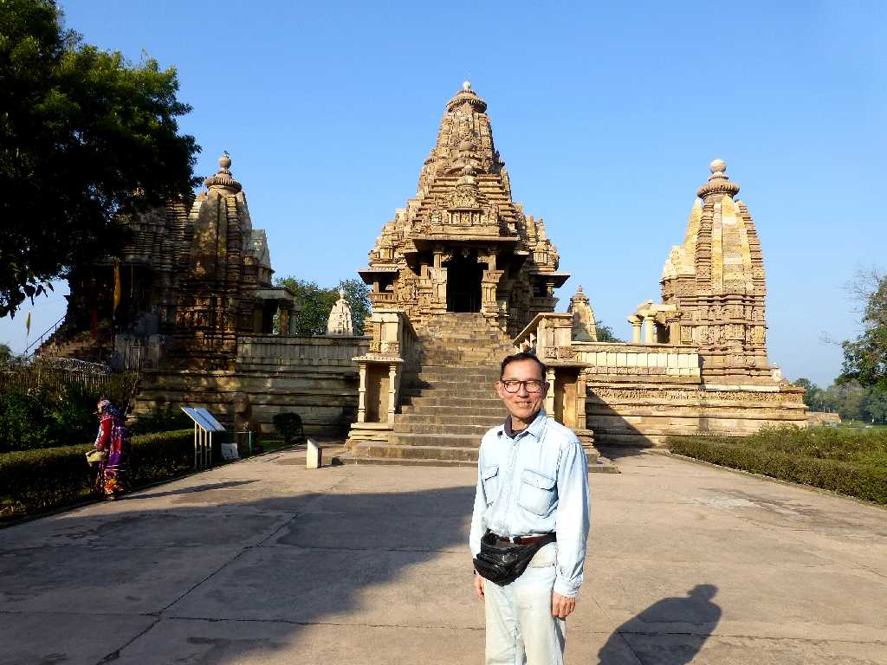
January 31 2015 Lakshmana Temple Western Group of Temples
９３０年～９５０年頃創られた繁栄の神ヴィシュヌ神を祀るラクシュマナ寺院
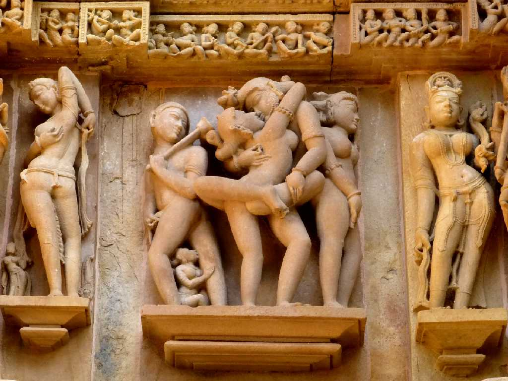
Relief Lakshmana Temple
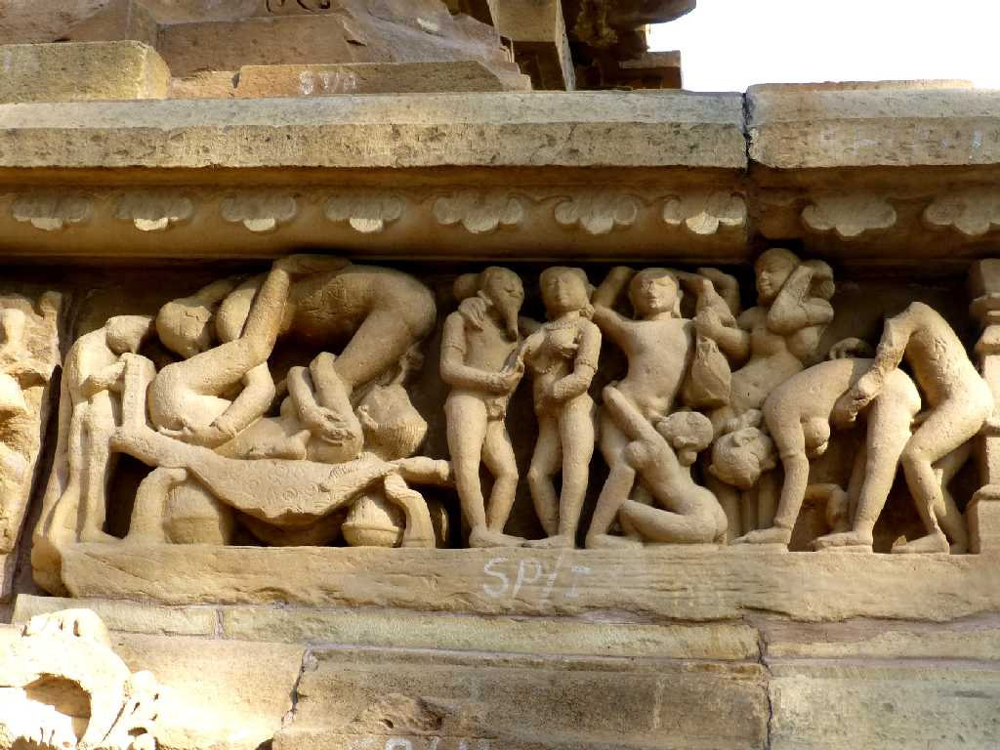
Relief Lakshmana Temple
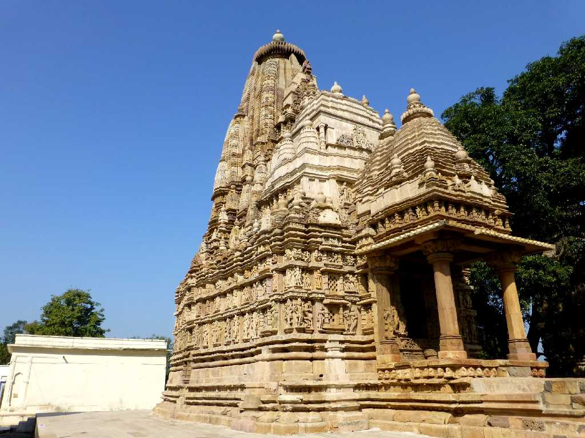
Parshwanath Temple Eastern Group of Temples Khajuraho
今回は時間があるので東寺院群も訪れた
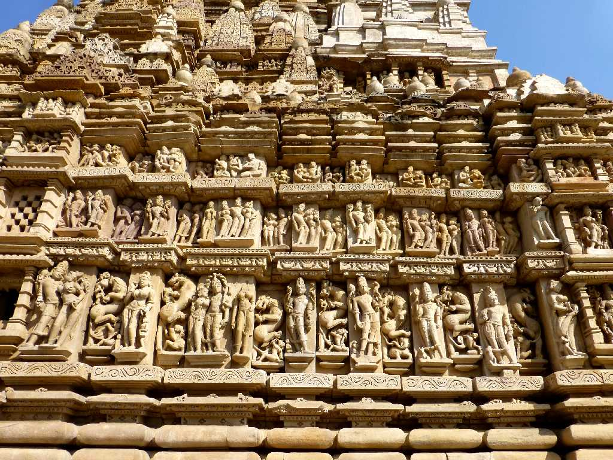
Relief Parshwanath Temple
１０００年頃創られたヴィシュヌ神を祀るパールシュヴァナータ寺院
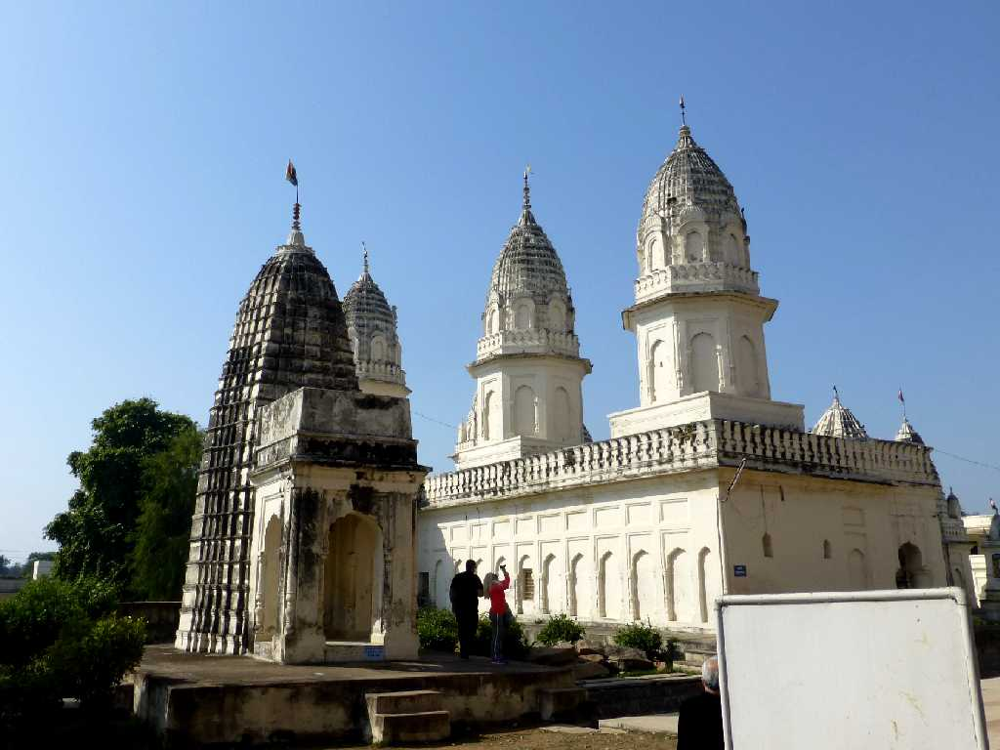 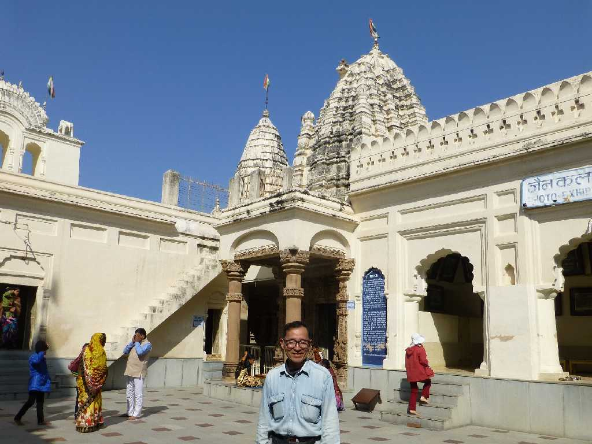
Shantinath Jain Temple Eastern Group of Temples Khajuraho
１１世紀に創られたシャンティナートジャイナ教寺院
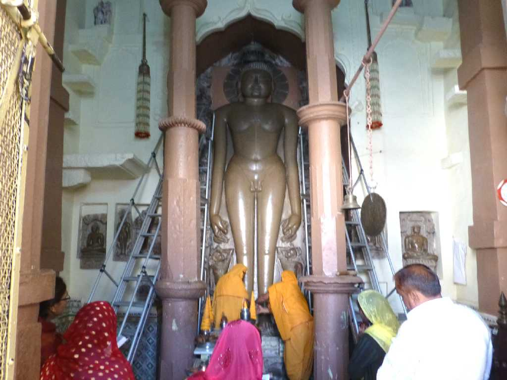
Shantinath Jain Temple Eastern Group of Temples Khajuraho